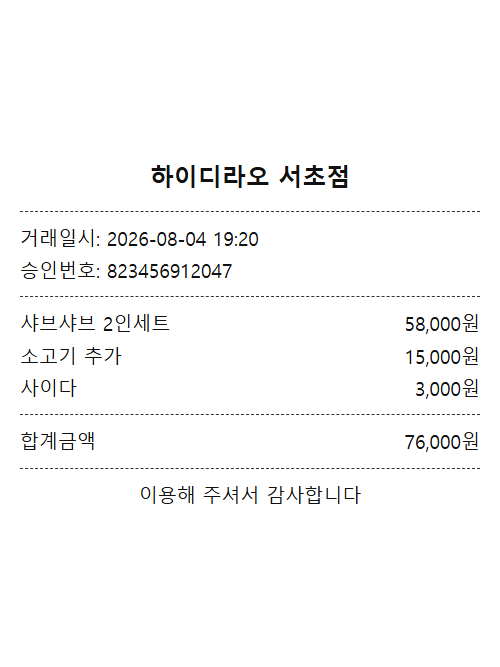
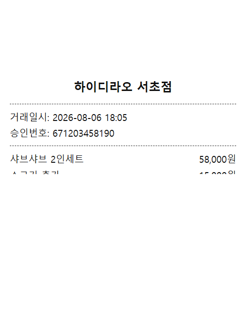
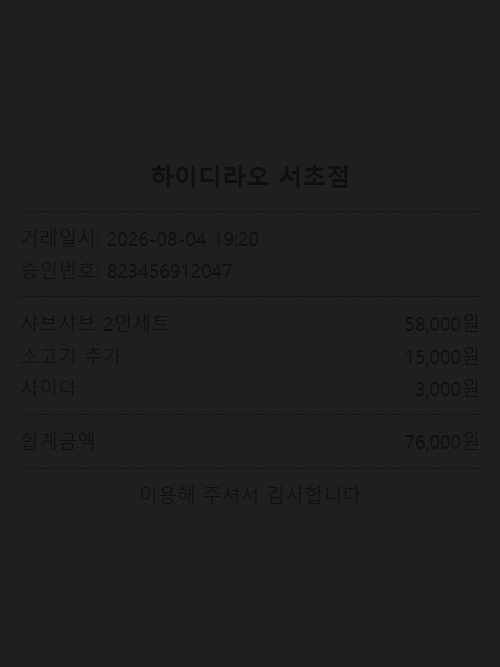

1
영수증 업로드
2
인식 결과 확인
3
리뷰 작성
카메라를 시작할게요
아래 버튼을 눌러 영수증을 촬영해주세요.
이 매장의 영수증을 인증합니다
-
매장 정보가 없어요
지도 탐색에서 매장 상세 페이지의 "리뷰 작성" 버튼으로 들어와야 영수증 인증을 진행할 수 있어요.
영수증 사진 업로드
가게명, 방문일시, 결제금액이 잘 보이도록 촬영해주세요.
영수증을 끌어다 놓거나 클릭해서 선택
JPG · PNG · WEBP / 10MB 이하
선택된 파일이 없습니다
업로드된 영수증
사진이 선명한지 확인한 뒤 OCR 인식을 실행해주세요.
이렇게 찍어주세요

전체가 보이게

잘리거나 접힘

너무 어두움
인증 성공
방문을 확인해주세요
-
-
-
-
결제 금액
-
방문 일시
-
인식된 메뉴
공개하면 다른 이용자도 이 리뷰에서 어떤 메뉴를 드셨는지 볼 수 있어요.